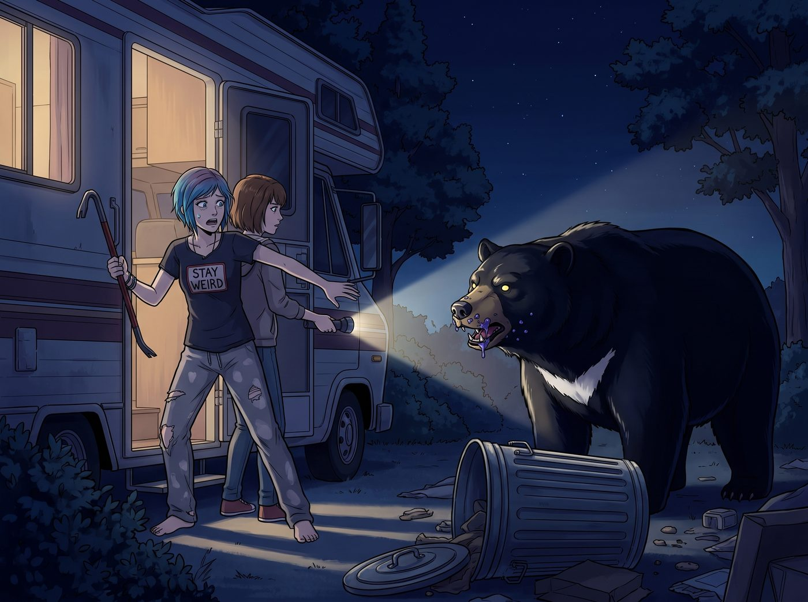
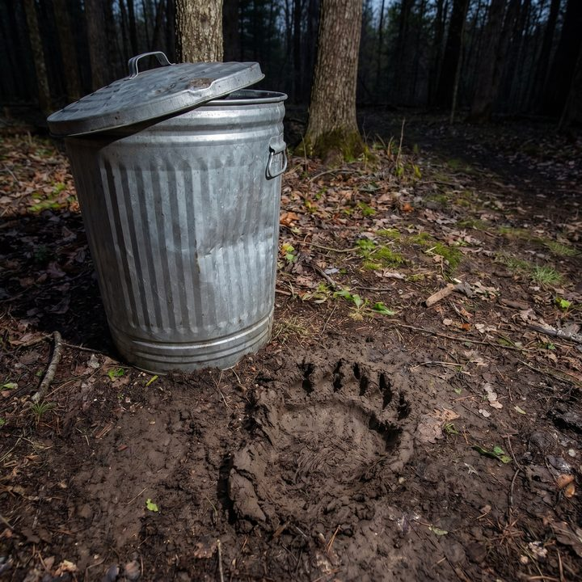

聲光驅離


在普吉特海灣（Puget Sound）這種被無盡的冷杉林和太平洋水系環繞的邊緣地帶，真正的威脅從來不是林道那頭的鄰居。
這片土地的底色是狂野的。雖然沒有 Chloe 嘴裡那種嘴裡吐著綠水的「變異熊」，但在華盛頓州的森林邊緣，野生黑熊、美洲獅（Cougar）以及成群的郊狼（Coyote），是每個住在非城市中心居民都必須面對的物理現實。
二號車廂之所以一直安然無恙，完全是因為外圍那些冰冷的鋼鐵柵欄和濃重的機油味掩蓋了人類的氣息。直到有一天，這個平衡被打破了。
那是個沒有下雨的深夜，車廂外突然傳來一陣沉悶的金屬碰撞聲。不是那種小偷撬鎖的聲音，而是某種擁有著絕對力量的龐然大物，硬生生地將營地外圍那個重達上百磅的防熊垃圾桶給撞翻了。那天 Kate 倒完廚餘，忘了扣上桶蓋的防熊鎖扣。
「我發誓，如果是哪個混蛋半夜來偷我的鋼管，我這次一定把他的腦袋塞進排氣管裡！」
Chloe 滿臉起床氣，穿著破洞睡褲，手裡抄起一根沉甸甸的鈦合金撬棍，一把推開了車廂的門。
Max 敏銳地察覺到外面的動靜不對勁，抓起手電筒緊緊跟在 Chloe 身後。
當手電筒的光束打在垃圾桶旁時，Chloe 手裡的撬棍差點掉在地上。
那根本不是什麼偷鋼管的混蛋。
在光束的中心，站著一頭體型龐大、毛髮漆黑發亮的成年華盛頓州野生黑熊。牠正把大半個身子探進被強行破壞的垃圾桶裡，瘋狂舔舐著 Kate 下午烤失敗後扔掉的、沾滿了頂級有機香草精和藍莓糖漿的麵團殘渣。
被手電筒強光一照，這頭足足有三百磅重的猛獸轉過頭，發出了一聲低沉、充滿警告意味的嘶吼。那種屬於頂級掠食者的壓迫感，瞬間讓周圍的空氣都降至冰點。
「老天……」Chloe 瞬間僵住了，街頭混混的脾氣在絕對的自然力量面前毫無用武之地。她本能地張開雙臂，把 Max 死死護在身後，大腦一片空白，根本想不起遇到熊到底是該裝死還是該大聲吼叫。
車廂裡傳來了 Victoria 變調的尖叫聲：「那是什麼鬼東西？！為什麼我們營地裡會有一頭熊？！我的天，牠會不會帶有狂犬病？！快把門關上！」
Kate 則在窗邊雙手合十，聲音顫抖卻充滿了不合時宜的慈悲：「主啊……牠看起來好餓，但牠不能吃那個，香草精裡有酒精成分，牠會酒精中毒的……」
就在這生死存亡、極度混亂的五秒鐘裡，營地外圍的四個角落，突然同時爆發出了一陣足以刺破耳膜的、高達 120 分貝的銳利警報聲。
與此同時，四盞高亮度的頻閃探照燈瞬間亮起，以一種極度致盲的頻率，精準地聚焦在那頭黑熊的眼睛上。
黑熊被這突如其來的「聲光物理超度」嚇得渾身一震，發出了一聲驚恐的哀嚎。牠甚至連嘴邊的藍莓麵團都顧不上了，以一種與龐大體型完全不符的敏捷速度，連滾帶爬地衝破了邊緣的鐵絲網，頭也不回地遁入了黑暗的冷杉林中。
警報聲隨即停止，探照燈也恢復成了溫暖的橘色照明模式。
Chloe 和 Max 驚魂未定地站在原地，冷汗已經濕透了後背。
車廂的擴音器裡，傳來了 Lily 依然軟糯、平靜、伴隨著輕微鍵盤敲擊聲的廣播：
「危險已解除，Chloe 學姐。這套『動態感應聲光驅離系統』，是我上個月用營地的安全預算裝的。
華盛頓州魚類及野生動物管理局（WDFW）建議住在林邊的居民，用突然的巨大噪音和動態感應燈來嚇走黑熊。原理不是傷害牠，而是讓牠判斷這裡有危險、不值得冒險。這是完全非致命的驅離方式，牠明天醒來，只會記得這個營地很吵。」
Lily 停頓了一下，語氣裡多了一絲無可奈何的行政責備：
「不過，我必須提醒 Kate 學姐，您今天丟棄的高糖分烘焙廢棄物，其散發的卡路里信號在方圓三英里內極具誘惑力。從明天起，所有的廚餘請先放在車廂裡的密封桶，收垃圾那天早上再拿出去；戶外垃圾桶的防熊鎖扣，每次都必須扣上。我們不能把營地變成森林生態系統的自助餐車。」
Chloe 長長地吐出一口氣，扔掉手裡的撬棍，雙腿一軟，直接坐在了冰冷的地上。
「街頭法則第五條……」Chloe 摸著狂跳的心臟，虛弱地看向 Max，「永遠不要拿撬棍去跟一頭吃了頂級香草精的黑熊單挑。還有，永遠要感謝妳的室友是個懂合規的黑魔法師。」
Max 走到被撞癟的垃圾桶旁，看著地上那個比成年人手掌還要大出兩圈的清晰熊爪印。她舉起寶麗來相機，伴隨著閃光燈，將這個差點引發血案的自然印記記錄了下來。
相紙吐出，Max 在背面寫下：
『這片森林裡沒有超自然怪物，但飢餓的野生動物與大自然的原始法則，遠比任何都市傳說都來得真實。好在，官僚主義的聲光警報器，對黑熊同樣有效。』